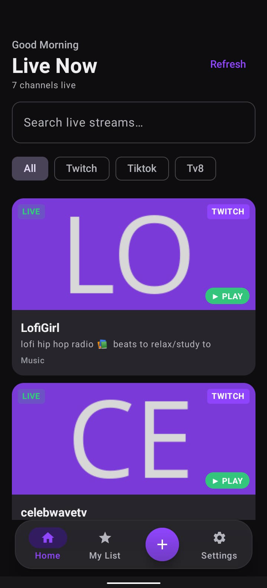
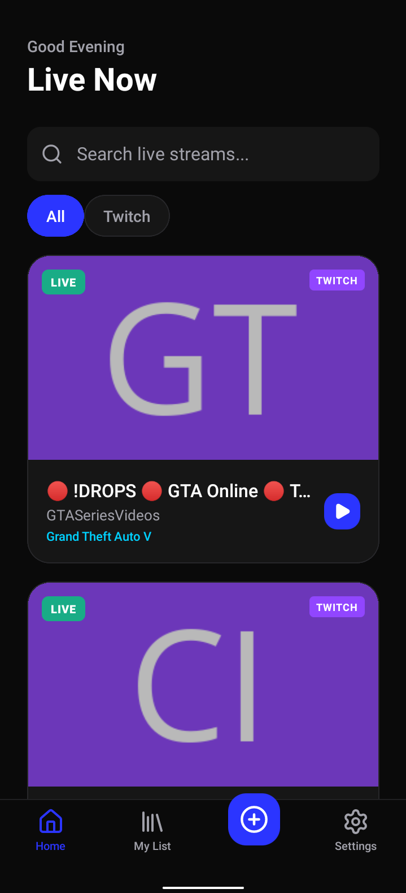
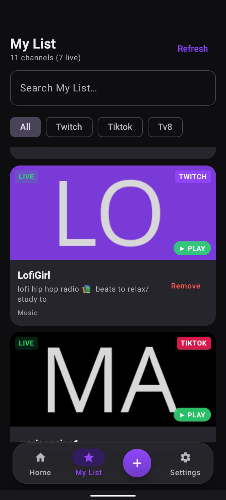
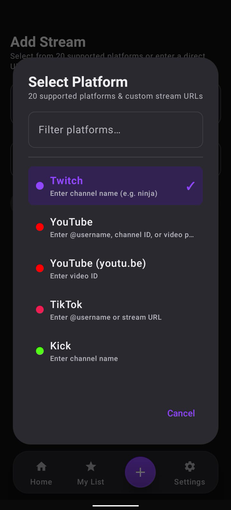
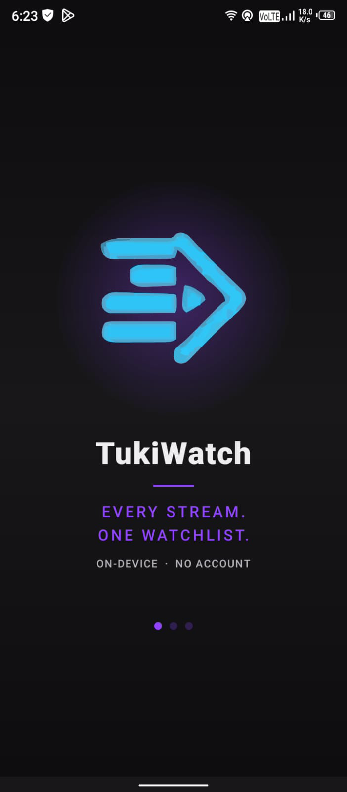

01
Live Now tab
One screen shows only who's streaming right now. Filter by platform, search by name, pull to refresh. Your watchlist, at a glance.

Open source · Privacy-first · Free forever
Add your favorite channels from Twitch, YouTube, Kick, and 20 preset platforms. Watch them in the app — no account, no cloud, and no TukiWatch backend.
Android 8.0+ · one APK for arm64-v8a and armeabi-v7a

Works with your favourite platforms
No accounts, no cloud sync, no data collection. Your favorites live on your device — period.
One screen shows only who's streaming right now. Filter by platform, search by name, pull to refresh. Your watchlist, at a glance.

Every saved channel, online or offline status, full add and remove management. Your library stays on your phone.

Add streams from Twitch, YouTube, Kick, TikTok, Facebook, Instagram, and more. Custom URLs are supported too.

Native video playback with quality switching, picture-in-picture, and deep links to open streams in their official apps.
Streamlink runs inside the APK through Chaquopy. Streams are resolved on your phone, not on a TukiWatch server.
Export and import your My List as JSON through Android's file picker. Favorites are stored in local SQLite.
No accounts. No cloud. No analytics. Your favorites and settings stay on your device.
Real screenshots from the app. No mockups, no renderings.

Onboarding
Live Now
My List
Add Stream
Four steps. No account. No credit card.
Get the APK directly from GitHub Releases.
Launch the app. There is no server to configure, no account to create, and no API key required.
Search or paste URLs from Twitch, YouTube, Kick, and 20 preset platforms. They save locally.
Check the Live Now tab whenever you want. Tap a stream to play in-app with quality switching.
TukiWatch is free and open source. Donations are optional and fund development time — there are no paid tiers or locked features.
Download TukiWatch for Android — free, open-source, no account required.